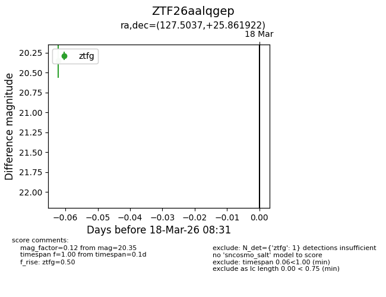
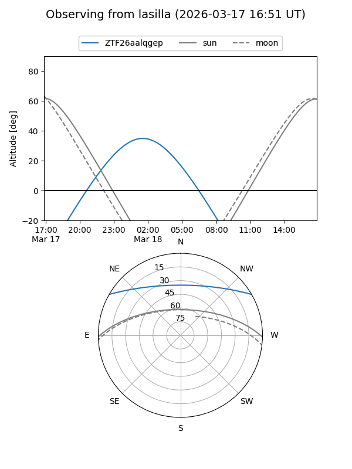
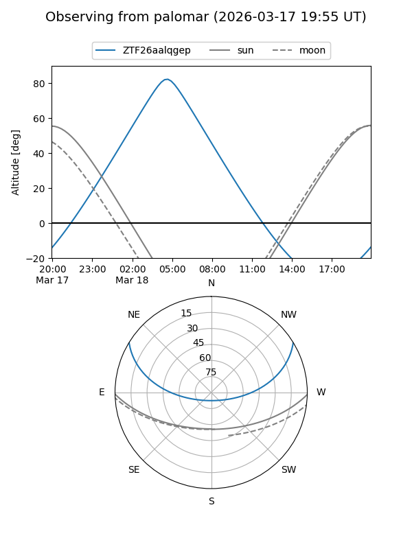

ZTF26aalqgep
Target ZTF26aalqgep at 2026-03-18 08:33
Aliases and brokers:
FINK: link
Lasair: link
ALeRCE: link
alt names
ZTF26aalqgep (ztf,fink_ztf)
Coordinates:
equatorial (ra, dec) = 127.5037,+25.86192
equatorial (HMS+DMS) = 08:30:00.89,+25:51:42.92
galactic (l, b) = (198.0647,+32.19780)
Flags:
Photometry:
last ztfg=20.35
1 ztfg detections
Lightcurve

Visibility


Additional plots